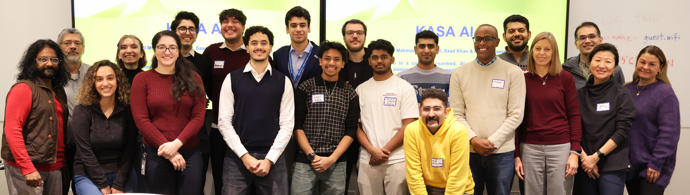
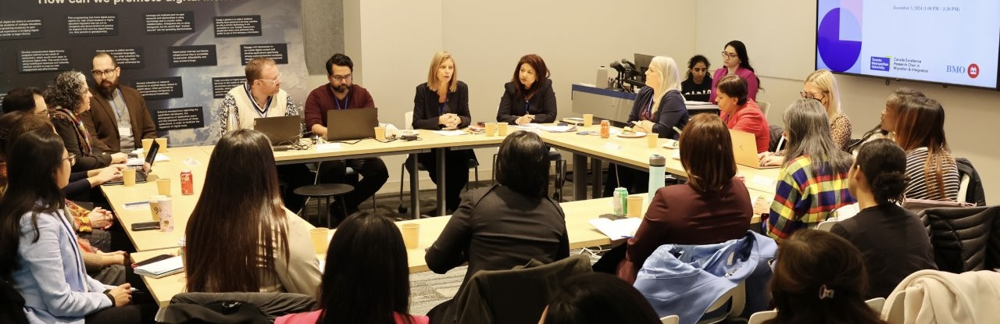

Welcome to my projects page! Here, you'll find information about
the projects I have led and collaborated on. For each project, you
can learn about my role, the lessons I gained, and the skills I
developed through the experience.
Build a Bridge Program and Competition

Build a Bridge
is a six-week initiative designed to inspire and
empower students to identify challenges in migrant integration
and develop innovative AI solutions to address them. This
initiative is hosted by the CERC in Migration and Integration
and the Bridging Divides programs at TMU. The Responsible
Artificial Intelligence (RAI) lab sponsors the competition
award.
Program Phases
Phase 1: Developing Entrepreneurial Skills
Three workshops with focus on teaching entrepreneurial
skills and guiding students on how to transform an idea into
a minimum viable product (MVP).
Phase 2: Exploring Immigration Integration Challenges
Three workshops with focus on understanding immigration
integration challenges that can be addressed using
technology and digital tools.
Phase 3: Learning from AI Researchers
Three workshops which AI researchers provided examples and
insights to the students, improving their understanding of
how AI can be applied.
Phase 4: MVP Development and Mentorship
Students have one month to develop their MVPs, supported by
weekly mentorship sessions. At the end of the four weeks,
students submit a demo of their digital tools.
My Role in the Project
-
I designed this program to align with the research and
innovation portfolio of the Bridging Divides research
department.
- I managed and executed this project.
-
I taught entrepreneurship workshops during the first phase.
-
I mentored the teams in building their minimum viable product,
market research, customer discovery, and user tests.
Next step for the project
We have decided to run the Build a Bridge program annually and
will expand the next cohort to include four universities:
Toronto Metropolitan University, Concordia University, the
University of Alberta, and the University of British Columbia.
Planning is currently underway for the next cohort, which is
scheduled to take place in Fall 2025.
BMO Newcomer Workforce Integration Lab

BMO Newcomer Workforce Integration Lab
investigates the challenges employers face in
hiring and integrating immigrant workers into their companies.
In this project, we design several problem-discovery roundtables
for enterprises to explore these challenges. After problem
discovery, we will create a toolkit and workshops to help them
overcome those challenges. We had our first problem-discovery
workshop on Dec 10th, 2024.
My Role in the Project
-
I delivered a brief presentation on how AI adoption can
support hiring and the integration of immigrants.
-
I explained the questions in the roundtable instruction
regarding the challenges they face in deciding to implement
AI, applying it effectively, and educating their staff on its
ethical and safe use.
-
I facilitated one of the discussion groups, guiding the
conversation by asking questions and ensuring the discussion
remained focused on the session’s objectives. I also
encouraged active participation from all group members.
-
At the workshop's conclusion, I presented a summary of my
team’s discussion, sharing their feedback and ideas with all
participants.
Next step for the project
In the first problem-discovery roundtable, 32 organizations
participated. We plan to publish the results of this initial
workshop, host another problem-discovery session in Spring 2025,
and engage more employers in the project.
Startup Spotlight Project
Startup Spotlight Project
aims to gather information on social ventures and
advanced technologies that tackle immigration and integration
challenges. By raising awareness about the ways that technology
can address these issues, we hope to encourage researchers to
collaborate with these startups or take action and develop
startups to address the immigration integration challenges.
My Role in the Project
-
I conducted research and gathered information on social
ventures.
-
I created the content that was published in the Startup
Spotlight section of the Bridging Divides website.
Next step for the project
This is an ongoing project, and we add two startups to the
webpage each month.
Codify.ai Project
Codify is a data management digital tool for qualitative
research. It is designed for researchers in social sciences to
label and manage their research data and is currently in the
user test stage with Bridging Divides researchers. This project
is being developed by the Laboratory for Systems, Software, and
Semantics (LS3) at TMU, and Ebrahim Bagheri, Canada Research
Chair in Social Information Retrieval, leads this project.
My Role in the Project
-
I conduct user tests and work closely with the engineers in
the team to help them navigate the user behavior in the
platform, develop a user-friendly product, and achieve product
market fit.
Next step for the project
This is an ongoing project. While the technical team develops
the product, I will stay in touch with researchers, conduct user
testing, present the project at several meetings and seminars,
and encourage more researchers to participate in user tests and
provide feedback about the product.